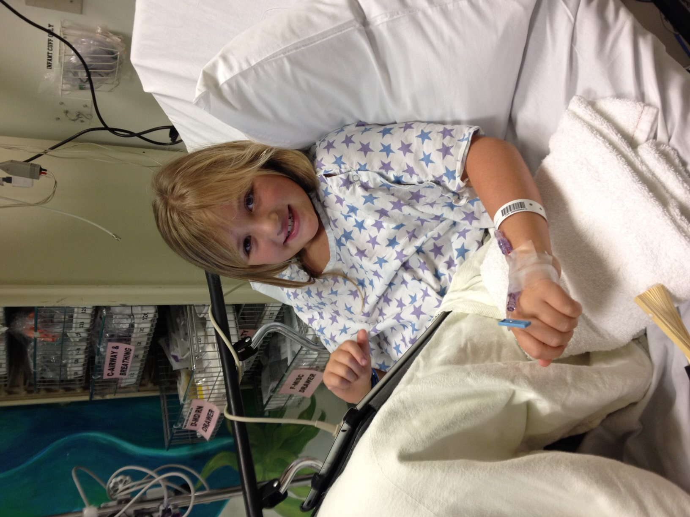

Diabetic Technology Tracking
According to research conducted at Stanford university people with diabetes (particularly those using insulin to manage their condition) make 180 more decisions each day about their health than someone without diabetes. (diabetes.org.uk)
Hi, my name is Malia Hill, and I am a type 1 diabetic. I've had diabetes for 11 years now, but I am still far from an expert. In the past decade (omg over a decade), technology for diabetes has improved so much. Currently, I'm using a T: slim insulin pump and a Dexcom G6. The insulin pump gives me my medication; the Dexcom (CGM) reads my blood glucose and sends it to my pump, where I can view it. I am also using the Tslim app on my iPhone that uses bluetooth to connect to my insulin pump and allows me to read my blood sugar and give myself insulin through my phone. This has been an absolute game-changer, especially if I'm wearing clothes where my pump is covered or out of the way and I can't easily access it. Going from seven shots a day and at least twelve finger picks, I'm still in shock at how much the diabetes world has changed. I wanted to see how often I am checking my blood sugar and administering insulin in a span of 24 hours. So, in this website, I will be tracking my diabetic technology use, and whether that means my Tslim app, banner notifications on my lock screen, or actually using my pump- I've decided to just group all diabetes supplies together. I know this is a lot of information to take in, but bear with me. I hope you like the website!

